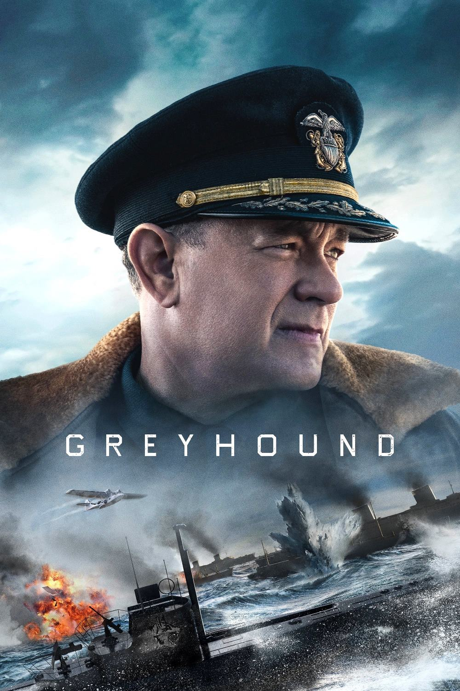

Мировая премьера: 10 июля 2020
Слоган: Опасней чем на фронтах войны бывало лишь по дороге к ним.
Сюжет: Основанная на реальных событиях история времён Второй мировой войны. Капитан Эрнест Краузе возглавляет международный конвой из 37 кораблей, выполняя смертельно опасную миссию – переправить тысячи солдат и столь необходимые союзникам припасы через всю Атлантику.
Режиссёр: Аарон Шнайдер
В основе: Роман Сесила Скотта Форестера "«Грейхаунд», или Добрый пастырь" (Великобритания, 1955)
В ролях:
| Том Хэнкс | Капитан Эрнест Краузе |
| Стивен Грэм | Старпом Чарли Коул |
| Уильям Пуллен | Телефонист #3 |
| Карл Глусман | Рэд Эппштейн |
| Том Бриттни | Лейтенант Уотсон |
| Элизабет Шу | Эвелин Фрешетт |
| Роб Морган | Джордж Кливленд |
| Джош Уиггинс | Телефонист #1 |
| Мануэль Гарсиа-Рульфо | Мелвин Лопес |
| Чет Хэнкс | Бушнелл |
| Джими Стэнтон | Лейтенант Харбутт |
| Мэттью Хелм | Лейтенант Эдгар Найстром |
| Девин Друид | Гомер Уоллес |
Бюджет: $ 50 млн.
Продолжительность: 1 ч. 22 мин.
Рейтинг: 7.0